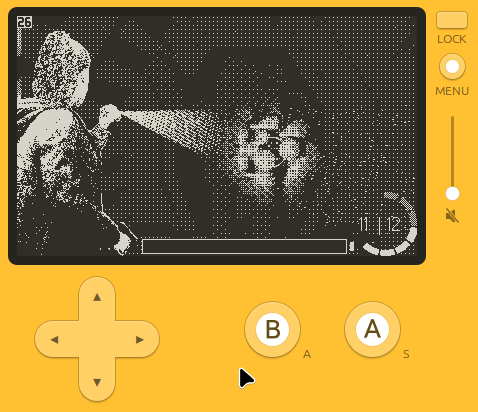
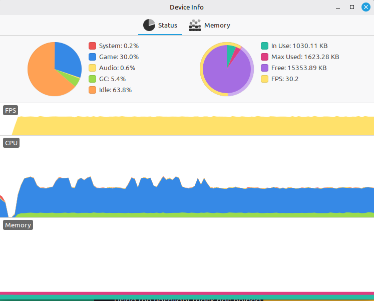
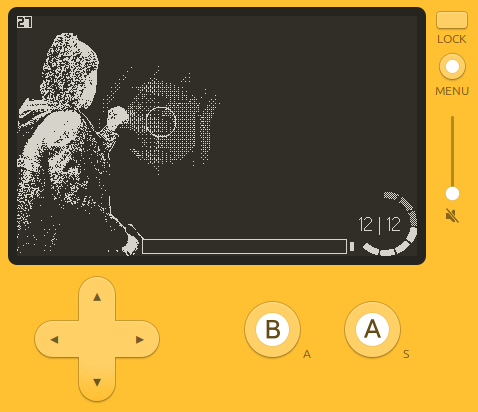

Makeing A Survival Horror Game For The Playdate Dev Log 3: Lighting
08/07/2026
The Current FlashLight:
In my last update I achieved the effect of having a cone of light coming from the flashlight by using sprites, then rotating said sprite. this worked fine in the simulator but came with some serious performance issues when tested on device. i still consider the flashlight cone to be an important part of the project as the flashlight cone helps communicate that it is you making the environment lighter or darker.
Below is a showcase of my previous version of the flashlight method.

A few issues with the previous flashlight version:
- rotating and scaling the flashlight cone image was a hit to performance.(as low as 5fps on device)
- rotating and scaling the image resulted in weird artifacting pattern appearing when small on screen, and stretched pixels when cursor was far away.
- Simply scaling the image to fit the cone getting closer to the player character isn't consistent to how a 3d cone would be viewed as perspective changes.
- this is less of an issue exclusive to the current flashlight cone method but rather an issue with my current method of thinking: the flashlight illuminates the full room, not just the spot the flashlight is focused. this inst the end of the world, but as im moving forward with the project i am starting to see the flaws of this method. perhaps using a mask or a dimming texture could help add to the technique. maybe by using a large black texture with a hole in it around would help convey the flashlight better than the use of a cone would.
Some possible solutions:
-Using a flashlight mask to dim the surrounding environment leaving the aria the player is aiming at a full intensity. this method has some key advantages: using 1 set of masks my mean that environments and enemies only need to be rendered at 1 lighting intensity, as the flashlight mask will be doing the work of dimming the room thus saving storage and memory. it will create better highlights of the aria the player is aiming at, resulting in gameplay moments where plays have to balance 2 oncoming enemies but can only view one at a time by using the flashlight. The only flaw with this solution is that the mask would cover elements that are supposed to be illuminated in the environment when it is dark, this constraint may be ignored as the effect is convincing enough as it is, if I did want to improve the effect ,it would be possible to use a seconded environment texture as a mask, but I don't think this is necessary.
- A potential solution specifically for the flashlight cone is to attempt to create the same effect as the sprite based method but using the built-in Playdate gfx.draw functions. my intentions use drawCircle to create a large circle around the aiming reticle, then using gfx.drawLine to draw between the flashlightPoint on the main characterSpritegxf.draw functions work in solid colours it may be difficult to create the sense of a gradient in the cone of light. And using draw line my result in super obvious lines rather than the noisy effect that the image texture had.
-Another attempt at a flashlight could be done by having a gradient texture pre rendered, then adjusting its transparency using an image mask in the shape that I can adjust using code, like gfx.drawTri.-Another attempt at a flashlight could be done by having a gradient texture pre rendered, then adjusting its transparency using an image mask in the shape that I can adjust using code, like gfx.drawTri.
Combining several of these methods may create the most believable affect.
I am interested to see how the flashlight focus mask pairs with the masked gradient texture.
Creating The New FlashLight

Above is my first attempt using a mask over the scene, this uses the previous light cone effect.
In my first testy with using a flashlight mask I found it instantly more effective at converting that light was coming from the flashlight, and now I will be able to remove the mask all together to portray the muzzle flash illuminating the whole room. However the first variation was too small to cover the whole screen when the cursor is at the far corners of the screen, this will be fixed in future iterations. This first iteration also resulted in some flashes as the dither pattern of the mask lining up with the dither pattern behind it, and issue caused by the textures moving slightly in relation with each other causing a different set of textures to slip through the mask, this also forced move speed to be locked down at intervals of 3 pixels moved per frame, else the mask would line up with several different sets of pixels in the background image, thus causing an unpleasant flashing effect. I resolved the issue of textured being misaligned when moving was due to an order of operations error, which has now been resolved.
Having to lock down the move speed is unfortunate as it may limit my ability to implement weapon sway, dynamic move speed and recoil. But this remains to be seen and tested.
Flashlight Cone Version 2
I tried making a flashlight cone using the draw line function to draw 2 lines one above and one below the flashlight focus point, but as I expected it didn't look good despite being permanent. My next attempt was to add a noisy gradient texture and use a mask or stencil so some time was spent reading through the Playdate documentation regarding these topics. The intention is to create a mask using drawPolygon to create the mask.
Using the flashlight mask has helped create the impression of the flashlight actually illuminating the environment. But now to revise the effect the flashlight charge has on lighting. I created several versions of the flashlight mask with both larger flashlight radius but also slowly dithering the blackout area to alow more of the pixels from lower layers to be visible, this has the effect of increasing visibility of the whole environment as the battery becomes more and more charged. This is great in terms of gameplay as it encourages players to keep the battery charged because it increases visibility in the peripheral arias outside of the players direct reticle. This effect also has the added benefit of implying the increased lighting is caused by ambient lighting – the idea that as the lighting gets brighter it will bounce around and cause the whole scene to become brighter.
The process of making a better flashlight cone and gradient is done by making a 200x200 pixel gradient texture, this texture is then attached to the flashlight origin point. This means that as the character moves so does the gradient. Next we need to set a mask, this is done by pushing context to the image. To calculate this mask we can use
gfx.fillPolygon() to draw a solid white triangle between the flashlight origin and the top and bottom of the flashlight reticle. This method of making a mask is far more permanent than my previous attempt. The only possible way of improving the effect is by drawing the polygon blurred to create less harsh edges on the edges of the cone. Unfortunately, this highly effected performance. According some research this is an issue with the function itself, and the different revisions of the Playdate may even process the effect with differing levels of performance. Due to the performance issues I unfortunately wont be using the blurred mask.
Below is a comparison of the performance of the blurred and unblured versions.

Unblurred Flashlight performance on device
Blurred Flashlight performance on device
Other small effects:
In addition to the main effect of the light cone, we also slide the gradient texture along the x axis if the cursor gets too close to the flashlight origin point. This is to avoid an issue of the mask having a noticiable cuttoff where the gradient texture is nearly fully lit. Another small improvement to the system is one that future proofs the flashlight cutout mask for when we introduce weapon sway. As mentioned earlier in this devlog, the blackout area of the flashlight cutout mask, uses dithering along the alpha channel so that pixels from lower layers can be seen. The pixels that peak through are at a consistant interval (due to the dither paturn I'm using also being at a consistant interval), as such the movements of the 2 layers should be at the same move speed as to avoid different sets of pixels from the background image from peeking throught. This avoids an unpleasent flashing effect, although it would also limit my cursor movement speed. To future-proof this constistant movemnt of the flashlight cutout mask fo when I implement dynamic movement speed on the cursor: I made a function that rounds the cursor position to the nearest multiple of the consistant move speed (in my case 3 pixels)

The Project Moving Forward
The shooting gallary still has a long way to go before being fully playable. The main thing missing is a propper monster behaviour, and shooting mechanics. This will be my next major step in the creation of the game.